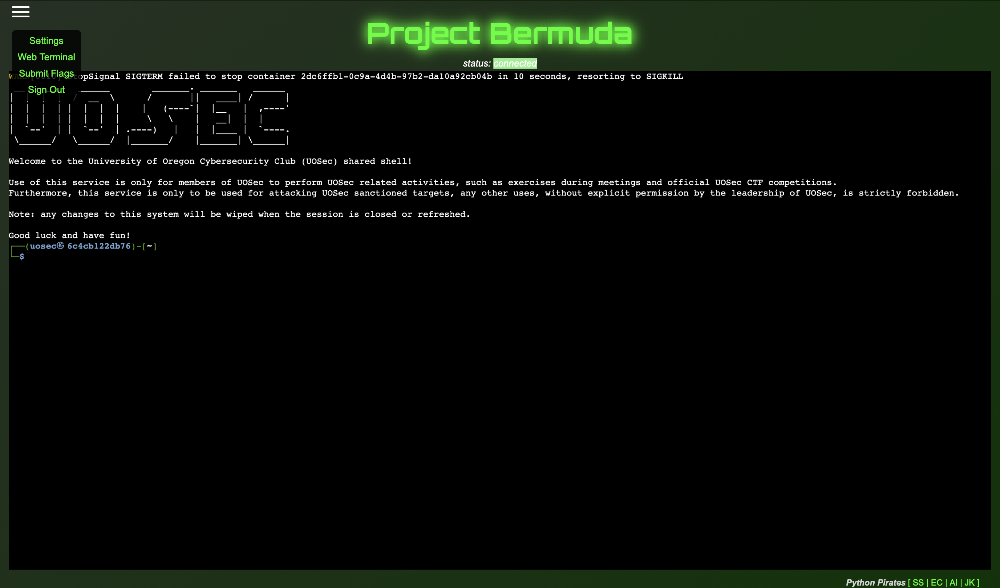
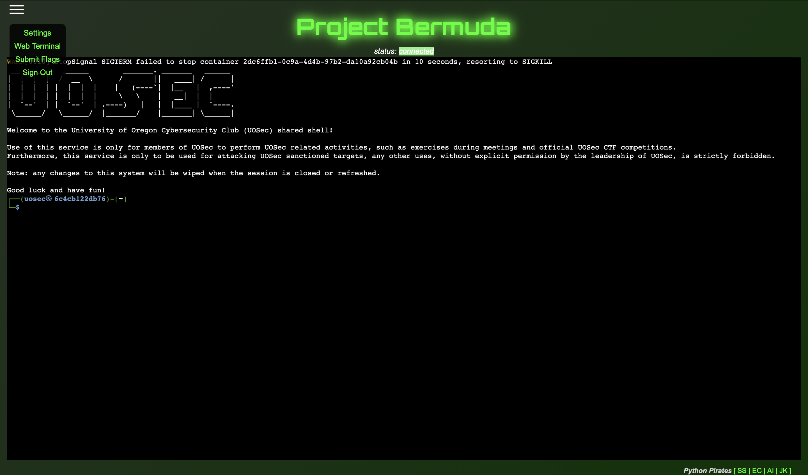

Projects
SecureU Dashboard

You should probably add something other than images here. Specify what exactly you did for each site, as well as skills learned and utilized.
Bermuda
 

You should probably add something other than images here. Specify what exactly you did for each site, as well as skills learned and utilized.
Hugin/Munin
You should probably add something other than images here. Specify what exactly you did for each site, as well as skills learned and utilized.